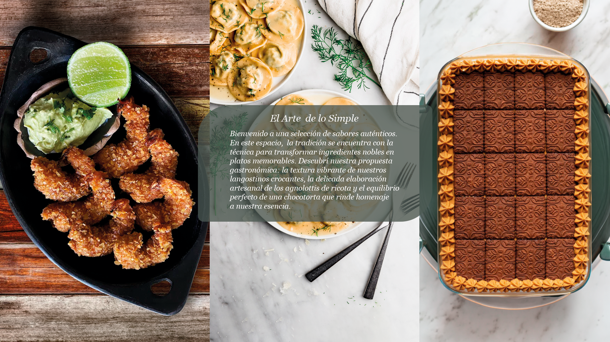
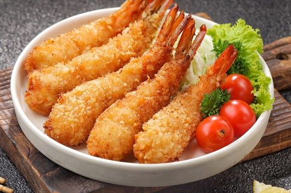
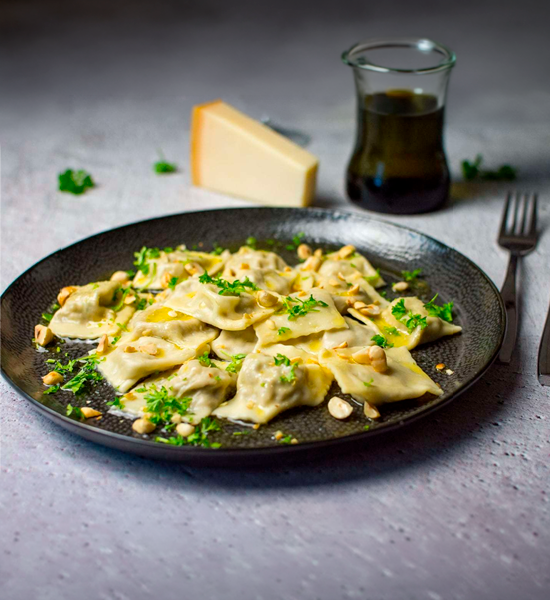
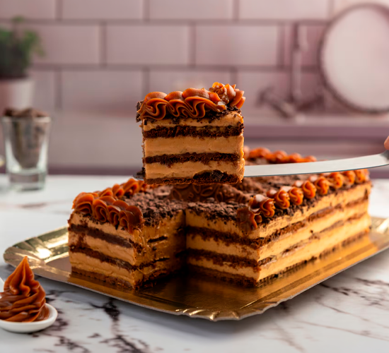
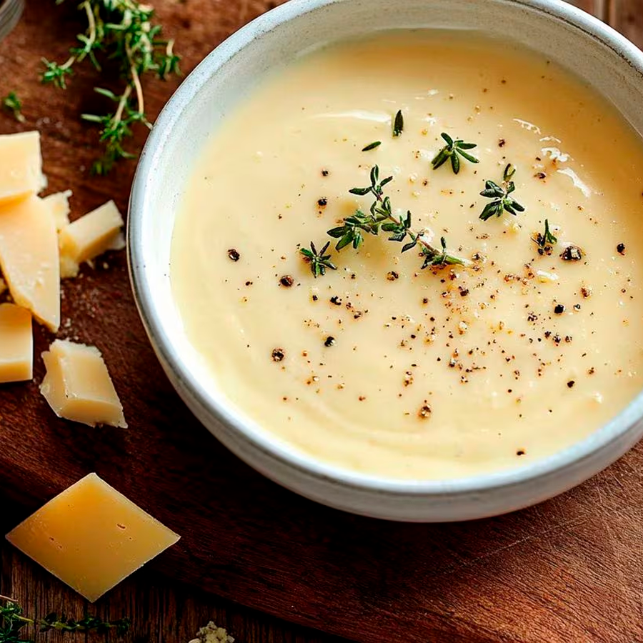
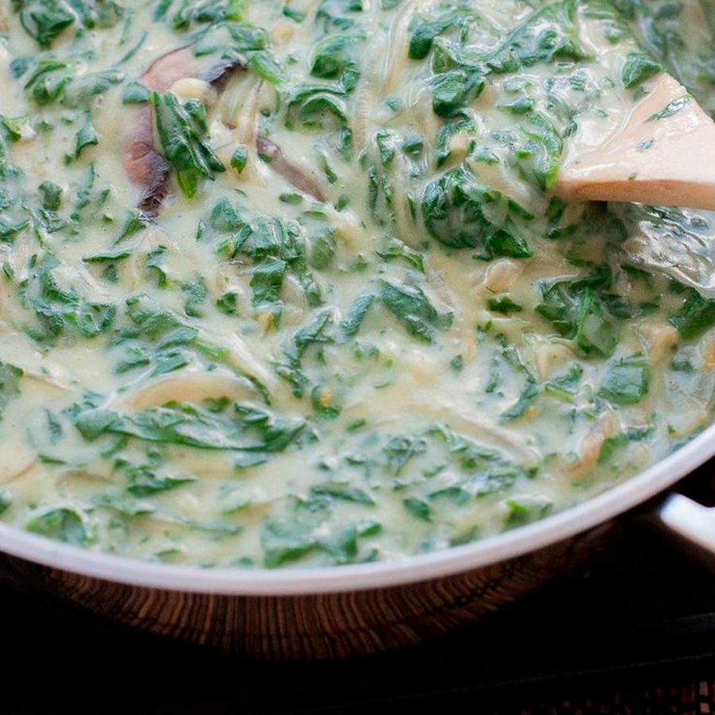
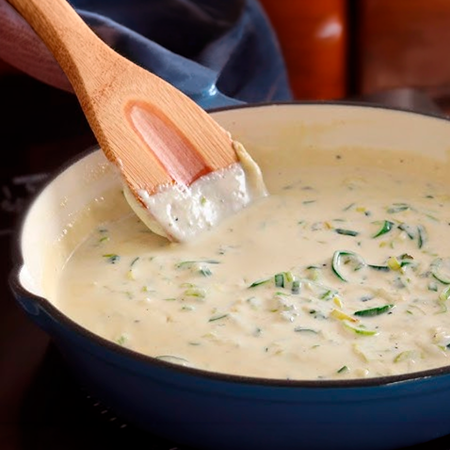

Entrada: Langostinos Crocantes
Una entrada sofisticada, crocante y muy fácil de preparar para abrir el apetito.
Ingredientes
- 500g langostinos pelados
- 1 taza harina, 2 huevos
- Pan rallado, avena y cereales sin azúcar (c/n)
- Provenzal, 1L aceite de girasol
Paso a paso
- Hervir los langostinos 3 minutos y dejar enfriar.
- Preparar tres bowls: harina; huevos con provenzal; y la mezcla de avena, pan y cereales triturados.
- Pasar los langostinos por harina, luego huevo, y finalmente el rebozado crocante.
- Dejar reposar 30 min en heladera (opcional).
- Freír en aceite bien caliente hasta dorar. Escurrir sobre papel absorbente.

Plato Principal: Agnolottis de ricota
Una pasta rellena clásica, suave y cremosa, ideal para acompañar con salsa fileto, crema o manteca y salvia. Tanto para preparar en familia como con amigos, todos deberian disfrutar de esta delicia.
Ingredientes
Para la masa
- 400g de harina 0000
- 4 huevos
- 1 cucharada de aceite de oliva
- 1 pizca de sal
Para el relleno
- 500g de ricota
- 100g de queso rallado
- 1 huevo
- Nuez moscada
- Sal y pimienta
Paso a paso
- Para primero preparar la masa, hacé una corona con la harina, agregá los huevos, aceite y sal. Mezclá y amasá hasta obtener una masa lisa. Tapala y dejala descansar 30 minutos
- Para hacer el relleno, mezclá la ricota con el queso rallado, el huevo y los condimentos hasta que quede cremoso.
- Estira fina la masa con un palo o máquina para pasta.
- Para armar los agnolottis. colocá pequeñas porciones de relleno sobre la masa, doblá y cerra bien presionando los bordes. Cortá en cuadrados o rectángulos.
- Hervilos en abundante agua con sal durante 3 a 5 minutos, hasta que suban a la superficie.

Postre: Chocotorta
Un postre clásico argentino, súper fácil de hacer, cremoso y perfecto para cualquier ocasión. No necesita horno y queda mejor bien fría.
Ingredientes
- 3 paquetes de chocolinas
- 400g de dulce de leche
- 400g de queso crema
- Café, leche o chocolatada para humedecer
- 1 cucharadita de esencia de vainilla
Paso a paso
- Preparar el relleno mezclando el dulce de leche con el queso crema y la esencia de vainilla hasta obtener una crema homogénea
- Pasá rápidamente las galletitas por café, leche o chocolatada para asi humedecerlas. No las dejes mucho tiempo para que no se rompan.
- En una fuente colocá una capa de chocolinas y arriba una capa de crema. Repetí el proceso hasta terminar los ingredientes.
- Llevala a la heladera por al menos 4 horas, aunque queda mucho mejor esperar un dia entero.
- Finalmente, antes de servirla se puede decorar con cacao, chocolate rallado o mas dulce de leche.
Salsas recomendadas para el plato principal
Salsa cuatro quesos

- Crema de leche
- Queso parmesano
- Queso azul
- Mozzarella
- Nuez moscada
Salsa de espinaca y crema

- Espinaca fresca
- Crema de leche
- Ajo
- Parmesano
- Manteca
Salsa de puerro y panceta

- Puerro
- Panceta ahumada
- Crema
- Vino blanco
- Queso parmesano